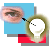
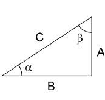
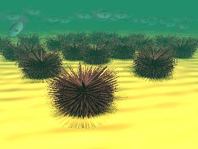
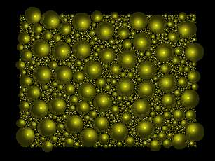
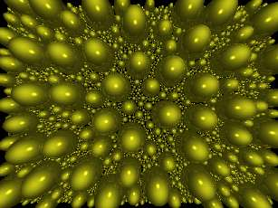
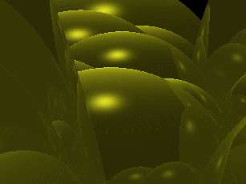
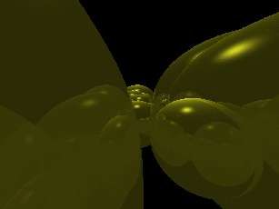

<HTML>
<HEAD>
   <META HTTP-EQUIV="Content-Type" CONTENT="text/html; charset=iso-8859-1">
   <META NAME="GENERATOR" CONTENT="Mozilla/4.05 [en] (X11; I; Linux 2.0.33 i586) [Netscape]">
   <TITLE>Welcome to LinuxFocus</TITLE>
</HEAD>
<BODY TEXT="#000000" BGCOLOR="#FFFFFF" LINK="#336633" VLINK="#336633" ALINK="#336633">
&nbsp;
<TABLE BORDER=0 CELLSPACING=5 CELLPADDING=5 WIDTH="100%" BGCOLOR="#FFFFFF" >
<CAPTION><!--        Page   Foot        --></CAPTION>


<!-- MAP for top navegation bar -->
<MAP name="top">
<AREA shape="rect" coords="367, 9, 418, 30" alt="Home" href="../">
<AREA shape="rect" coords="423, 9, 457, 30" alt="Map" href="../map.html">
<AREA shape="rect" coords="463, 9, 508, 30" alt="Index" href="../indice.html">
<AREA shape="rect" coords="514, 9, 558, 30" alt="Search" href="../Search/">
</MAP>


<!-- MAP for bottom navegation bar -->
<MAP name="bottom">
<AREA shape="rect" coords="78, 0, 163, 15"   alt="News" href="../News/">
<AREA shape="rect" coords="189, 0, 284, 15"  alt="Archives" href="../Archives/">
<AREA shape="rect" coords="319, 0,  395, 15" alt="Links" href="../Links">
<AREA shape="rect" coords="436, 0,  523, 15" alt="About LF" href="../aboutus.html">
</MAP>


<CENTER>
<BR>

</CENTER>


<TR VALIGN=TOP>
<TD WIDTH="25%" BGCOLOR="#FFFFFF">&nbsp;
<CENTER><FONT COLOR="#336633"><FONT SIZE=+2>Antonio Castro&nbsp;</FONT></FONT></CENTER>
&nbsp;


<P><FONT COLOR="#336633"><FONT SIZE=-1>Acerca del Autor</FONT></FONT>:
<FONT SIZE=-1>
Soy inform&aacute;tico de profesi&oacute;n y llevo ya varios a&ntilde;os gan&aacute;ndome la vida
con esto. Lo que m&aacute;s tiempo llevo manejando es el lenguaje C.
Tengo experiencia tambi&eacute;n como administrador de Unix aunque ahora estoy
desarrollando con Visual C++ en WindowsNT (Puaffff lo que hay que hacer
para ganarse el pan) Desde que tuve conocimiento de la existencia de 
Linux y del modelo de organizaci&oacute;n empleado en su desarrollo me di cuenta 
que el futuro ten&iacute;a que ir por aqu&iacute;. Tengo muchas esperanzas puestas en 
Linux y no me est&aacute; defraudando. Justo lo contrario me pasa con Microsoft.
</FONT><p></p>


<A HREF="mailto:acastro.ctv.es">Escribe al autor</A>


<P><FONT COLOR="#336633"><FONT SIZE=-1>Index</FONT></FONT>:&nbsp;
<BR><FONT SIZE=-1><A HREF="#section1">El  arte  y  la t&eacute;cnica  en   la infograf&iacute;a</A></FONT>
<BR><FONT SIZE=-1><A HREF="#section2">Objetos geom&eacute;tricos simples</A></FONT>
<BR><FONT SIZE=-1><A HREF="#section3">Objetos geom&eacute;tricos compuestos</A></FONT>
<BR><FONT SIZE=-1><A HREF="#section4">Utilizaci&oacute;n de bucles y condiciones en Povray</A></FONT>

<BR><FONT SIZE=-1><A HREF="#section5">Prueba y error, frente al c&aacute;lculo</A></FONT>
<BR><FONT SIZE=-1><A HREF="#section6">Erizos marinos</A></FONT>
<BR><FONT SIZE=-1><A HREF="#section7">Generaci&oacute;n mediante programas externos</A></FONT>
<BR><FONT SIZE=-1><A HREF="#section8">Optimizaci&oacute;n del uso de la CPU</A></FONT>
<BR><FONT SIZE=-1><A HREF="#section9">Lo que se hecha de menos</A></FONT>
<BR><FONT SIZE=-1><A HREF="#section10">Ejercicios</A></FONT>
<BR><FONT SIZE=-1><A HREF="#section11">Aportaci&oacute;n de los lectores</A></FONT>

</TD>

<TD WIDTH="75%" BGCOLOR="#FFFFFF">
<H1>
Dise&ntilde;ando estructuras iterativas en Povray</H1>

<FONT COLOR="#336633"><FONT SIZE=-1>Resumen</FONT></FONT>: 
<FONT SIZE=-1>
En este  art&iacute;culo veremos la  forma de usar Povray   para el dise&ntilde;o de
estructuras iterativas  y   como  pueden  lograrse  con   ellas bellas
imagenes.
</FONT>

<P>
<HR size="0" noshadow><A NAME="section1"></A>
<H3>El  arte  y  la t&eacute;cnica  en   la infograf&iacute;a.</H3>  


Estos  art&iacute;culos sobre  Povray  tratan tanto de  los aspectos t&eacute;cnicos
como  de aquellos que  no lo  son. La  t&eacute;cnica ya  lo  hemos  dicho es
importante pero tambi&eacute;n hay que aprender a sacar el m&aacute;ximo provecho de
ella. La  infograf&iacute;a es tan  distinta a  otras disciplinas  que quiz&aacute;s
para algunos sea  un  medio  donde  puedan  descubrir  sus capacidades
art&iacute;sticas. No abandonaremos  la t&eacute;cnica porque tambi&eacute;n es  necesaria,
pero  la t&eacute;cnica es   solo un instrumento,  para dominar  la  forma de
expresi&oacute;n.  Por ello continuaremos mezclando la fr&iacute;a exposici&oacute;n de los
conocimientos t&eacute;cnicos  con   aspectos m&aacute;s creativos.Se  trata de  dar
ideas.   Puntos   desde  los  cuales      se  pueden explorar   muchos
caminos. Ocurre  que muchas  veces empiezo  a  dise&ntilde;ar ejemplos  y  me
divierto tanto que las cosas que quer&iacute;a tratar en  ese momento pasan a
un  segundo   plano. Una exposici&oacute;n   demasiado sistem&aacute;tica resultar&iacute;a
demasiado aburrida y por  ello  tampoco resultar&iacute;a muy  did&aacute;ctica.  El
manual de Povray   s&iacute; que est&aacute;   desarrollado siguiendo una  secuencia
sistem&aacute;tica de los diferentes temas. Como instrumento de consulta est&aacute;
muy  bien.  Yo lo   uso mucho.  A  diferencia  del sistema met&oacute;dico  y
secuencial que se utiliza en el manual yo utilizo un m&eacute;todo que podr&iacute;a
decirse que  sigue un recorrido en espiral  volviendo a temas tratados
para tratarlos con m&aacute;s amplitud.&nbsp;

<p>Las escenas   que  utilizar&eacute; como ejemplo  para   ilustrar algunos
aspectos   t&eacute;cnicos no   ser&aacute;n  meros ejercicios   t&eacute;cnicos   sino que
intentar&eacute; buscar la belleza  est&eacute;tica y un acabado  m&aacute;s completo de la
escena aunque eso  suponga introducir elementos extra&ntilde;os no explicados
aun  en el ejemplo. 

<p>Poco a  poco se ir&aacute;n revisando todos  los conceptos para que lo que
no se  pudo comprender  en una primera  lectura  se pueda asimilar  en
futuros art&iacute;culos.  Por otra parte muchos  conceptos son  tan visuales
que  apenas necesitan excesiva   explicaci&oacute;n  porque el verlos   en un
ejemplo   resulta  suficiente para  poder  aplicarlo  a la perfecci&oacute;n.
Quizas mejor incluso  que si  lo  leemos en  el  manual sin  una buena
imagen como ejemplo.  Tampoco hay que olvidar  que para los que deseen
avanzar m&aacute;s deprisa siempre pueden recurrir a este manual de Povray.

<A NAME="section2"></A>
<H3>Objetos geom&eacute;tricos simples</H3> La mayor&iacute;a   de estos objetos ya  han
sido  utilizados   en alg&uacute;n ejemplo.  Los comentamos   ahora a modo de
repaso.

<p>El n&uacute;mero de objetos  que  se pueden dise&ntilde;ar usando
estas formas  b&aacute;sicas es enorme, y adem&aacute;s  hay que tener en cuenta que
el uso  de formas  sencillas representa un  ahorro considerable  en el
tiempo de proceso de la escena.</p>
<UL>
<LI>
<B>esfera</B></LI>

<BR>sphere { &lt; x, y, z>, radio ..... } /&nbsp;
<BR>x, y, z son las coordenadas del centro de la esfera.&nbsp;
<BR>En el lugar de los puntos suspensivos se pueden a&ntilde;adir sentencias
para&nbsp;
<BR>el escalado, rotaci&oacute;n, traslaci&oacute;n, pigmentaci&oacute;n,
textura, etc...&nbsp;
<LI>
<B>cono</B></LI>

<BR>Realmente la sintaxis permite definir un tronco de cono.&nbsp;
<BR>cone { &lt;x1, y1, z1>, rad1 &lt;x2, y2, z2>, rad2 [open] ..... }&nbsp;
<BR>x1, y1, z1 son las coordenadas del centro en el un extremo del tronco&nbsp;
<BR>de cono, y rad1 el radio en este extremo.&nbsp;
<BR>x2, y2, z2 son las coordenadas del centro en el otro extremo del tronco
de cono, y rad2 el radio en este extremo. Para que el tronco de cono se
convierta en un cono basta con que uno de los radios sea cero. Si deseamos
que sea un cono abierto a&ntilde;adiremos la palabra 'open' en caso contrario
la omitimos y obtendremos un cono macizo.&nbsp;
<LI>
<B>cilindro</B></LI>

<BR>cylinder { &lt;x1, y1, z1>, &lt;x2, y2, z2>, rad [open] ...... }&nbsp;
<BR>x1, y1, z1 son las coordenadas del centro en el un extremo del cilindro
x2, y2, z2 son las coordenadas del centro en el otro extremo del cilindro
como, y rad el radio del cilindro. Para que el cilindro se sea un cilindro
abierto a&ntilde;adiremos la palabra 'open' en caso contrario la omitimos
y obtendremos un cilindro macizo.&nbsp;
<BR>Recordemos que en caso de las esferas, conos y cilindros tenemos el
recurso de deformar estas figuras usando unos factores de escala adecuados.
Tambi&eacute;n puede intentar deformar otros objetos pero en estos casos
resulta especialmente interesante porque aparentemente se obtiene una figura
distinta.&nbsp;
<LI>
<B>plano</B></LI>

<BR>plane { &lt;x, y, z>, dist ..... }&nbsp;
<BR>En esta ocasi&oacute;n x, y, z no representan una posici&oacute;n sino
un vector cuya direcci&oacute;n es perpendicular a la superficie del plano.
El valor dist ser&aacute; la distancia al centro de coordenadas. Recordemos
que en Povray se puede abreviar la expresi&oacute;n de un vector. x = &lt;0, 
1 , 0> -z = &lt;0, 0, -1>&nbsp;
<BR>Se puede usar en lugar de un plano una esfera de gran tama&ntilde;o.
Esto no causa ning&uacute;n problema. Nosotros ya lo hemos utilizado alguna
vez.&nbsp;
<LI>
<B>caja</B></LI>

<BR>box { &lt;x1, y1, z1>, &lt;x2, y2, z2>...... }&nbsp;
<BR>x1, y1, z1 son las coordenadas de una de las esquinas de la caja x2,
y2, z2 son las coordenadas de la esquina opuesta.</UL>
<A NAME="section3"></A>
<H3>
Objetos geom&eacute;tricos compuestos. (CSG)</H3>
Las primitivas CSG permiten combinar varias formas simples en una sola
m&aacute;s compleja. Despu&eacute;s de esto tenemos un objeto que puede
ser manejado c&oacute;modamente en escalado, translaciones, giros, texturas,
etc.. sin necesidad de tener que aplicar estas transformaciones por separado
a cada uno de los componentes.&nbsp;
<BR>Las formas en que se pueden combinar los elementos sencillos entre
si son cuatro y existe una quinta complemento que se puede aplicar a un
elemento solo.&nbsp;
<UL>
<LI>
<B>Uni&oacute;n</B></LI>

<BR>'union { object {A} object{B} }'&nbsp;
<BR>Todos sus puntos dentro de A or B&nbsp;
<LI>
<B>Intersecci&oacute;n</B></LI>

<BR>'intersection { object {A} object {B} }'&nbsp;
<BR>Todos sus puntos dentro de A y B&nbsp;
<LI>
<B>Complemento</B></LI>

<BR>object {A inverse}&nbsp;
<LI>
<B>Diferencia</B></LI>

<BR>'difference { object {A} object {B} }'&nbsp;
<BR>Todos sus puntos dentro de A que no est&eacute;n dentro B&nbsp;
<BR>Equivale a 'union { object {A} object {B inverse }'&nbsp;
<LI>
<B>Mezcla</B></LI>

<BR>'merge { object {A} object {B} }'&nbsp;
<BR>Como la union pero desaparecen las superficies internas&nbsp;
<BR>de los componentes A y B. Si los objetos son todos opacos&nbsp;
<BR>este detalle no ofrece ning&uacute;n inter&eacute;s.</UL>
En los ejemplos siguientes se utilizan algunas de estas funciones.&nbsp;
<BR>Como sistema para dise&ntilde;ar sin equivocarse se puede utilizar
lo siguiente. Junte todas las primitivas que a&ntilde;aden volumen en un
&uacute;nico objeto. Luego haga la intersecci&oacute;n de este objeto tal
cual con el complemento las primitivas que eliminan volumen&nbsp;
<CENTER><TABLE>
<TR>
<TD>
<PRE>
#define ManzanaMordida = intersection {
 object { ManzanaEntera }
 object { Mordisco1 inverse }
 object { Mordisco2 inverse }
}</PRE>
</TD>
</TR>
</TABLE></CENTER>
Procure que las figuras compuestas no tengan superficies en com&uacute;n,
porque puede producir una indeterminaci&oacute;n para establecer a que
objeto pertenece esa superficie en com&uacute;n. Para solucionar esto basta
desplazar en una cantidad muy peque&ntilde;a uno de los objetos.
<BR><A NAME="section4"></A>
<H3>
<p>Utilizaci&oacute;n de  bucles y condiciones  en Povray.</H3> Los elementos de
una escena se describen generalmente en  un orden arbitrario.  A pesar
de   ello hay circunstancias  en que   puede ser necesario implementar
bucles descriptivos para crear estructuras  iterativas por ejemplo. En
Povray existen varias formas  de hacerlo. Una mediante las estructuras
de control de flujo que  proporciona el propio  lenguaje de Povray. En
su momento ya mencionamos las directivas de lenguaje <tt>#declare</tt>
e   <tt>#include</tt>   y calificamos  muchas   otras  como   de menor
importancia.  Ahora   las   usaremos  pero  veremos  que  tampoco  son
imprescindibles. </p>

En el   siguiente ejemplo usamos un programa  escrito
directamente en lenguaje Povray.  Tengo que decir que personalmente es
la primera vez  que  uso esto. El motivo  es  que no lo consider&eacute;  muy
necesario. Se puede conseguir   lo mismo con programaci&oacute;n  externa que
produzca el  fuente necesario, y veremos m&aacute;s  adelante un ejemplo de esta
segunda  posibilidad, que yo  uso bastante a   menudo. Se pueden hacer
cosas mixtas tambi&eacute;n. Veremos que el estilo de programaci&oacute;n con Povray
no queda tan elegante  como con un lenguaje de  prop&oacute;sito general.  La
raz&oacute;n  es  que  Povray se pens&oacute;  como  un  lenguaje de  descripci&oacute;n de
escenas, y estas cosas son a&ntilde;adidos recientes. Vemos que con Povray se
pueden programar  toda  clase  de  bucles  y expresiones   matem&aacute;ticas
complejas.  En  mi opini&oacute;n est&aacute;  muy  bien que Povray  incorpore estas
cosas pero  no   son imprescindibles. Todo   ello   se puede compensar
utilizando programaci&oacute;n externa, para   generar un fuente m&aacute;s  o menos
complejo o  iterativo. Creo que el hacerlo  de una manera u  otra nada
tiene  que ver con  la parte  art&iacute;stica  que es  la importante, por lo
tanto no  tiene especial merito hacerlo de  una manera u otra.  Lo m&aacute;s
importante es  la imagen  final. En  menor  medida  tambi&eacute;n  puede ser
importante   el  esfuerzo  de desarrollo   y  la cantidad  de  proceso
empleado. Si  conoce un lenguaje  de  prop&oacute;sito general con el  que se
sienta m&aacute;s  c&oacute;modo  utilice a  Povray  como un  paso final.  Si quiere
implementar algo    sencillo puede  usar   Povray directamente    para
ello. Veremos ambas formas de hacerlo, pero  antes comentaremos un par
de cosas m&aacute;s.  <BR><A NAME="section5"></A>
<H3>
Prueba y error, frente al c&aacute;lculo.</H3>
Tenga en cuenta que muchas de las escenas pueden dise&ntilde;arse partiendo
de una idea. Luego se prueba con valores estimados por aproximaci&oacute;n,
y por &uacute;ltimo se va corrigiendo mediante prueba y error hasta obtener
el resultado deseado. Para ello ya dise&ntilde;amos una herramienta que
nos permite usar Povray c&oacute;modamente (POV). Si piensa que todo puede
hacerse con este sistema est&aacute; equivocado. En ocasiones no queda
m&aacute;s remedio que coger el l&aacute;piz, el papel y la calculadora.
Adem&aacute;s los problemas que tenemos que resolver son problemas geom&eacute;tricos
en 3D. Es necesario un m&iacute;nimo de conocimientos de geometr&iacute;a
espacial y de trigonometr&iacute;a si quiere conseguir ciertos efectos.
Generalmente basta con saber aplicar unas pocas f&oacute;rmulas. Recordamos
aqu&iacute; unas pocas.

<P> sin(<FONT FACE="symbol">a</FONT>)
= A / C = (Cateto opuesto / Hipotenusa)&nbsp;
<BR>cos(<FONT FACE="symbol">a</FONT>) = B / C = (Cateto adyacente / Hipotenusa)&nbsp;
<BR>tan(<FONT FACE="symbol">a</FONT>) = A / B = (Cateto opuesto / Cateto
adyacente)&nbsp;

<P>Por tanto:
<BR>A = sin(<FONT FACE="symbol">a</FONT>)/C&nbsp;
<BR>B = cos(<FONT FACE="symbol">a</FONT>)/C&nbsp;
<BR>C = sqrt(A^2 + B^2)
<BR>Como 2* Pi radianes = 360&ordm;

<P>1 Radian = 180 / Pi = 57,29577951308232
<BR>1&ordm; = Pi / 180 = 0,174532925199432957

<P>Vamos a recordar los rangos de las principales funciones trigonom&eacute;tricas,
en funci&oacute;n del cuadrante:
<CENTER><TABLE BORDER CELLSPACING=0 CELLPADDING=10 >
<TR>
<TD BGCOLOR="#999999">Quadrante&nbsp;</TD>

<TD BGCOLOR="#999999">Seno&nbsp;</TD>

<TD BGCOLOR="#999999">Coseno&nbsp;</TD>

<TD BGCOLOR="#999999">Tangente&nbsp;</TD>
</TR>

<TR>
<TD>0 .. 90&nbsp;</TD>

<TD>0 .. +1&nbsp;</TD>

<TD>+1 .. 0&nbsp;</TD>

<TD>0 .. +Infinito&nbsp;</TD>
</TR>

<TR>
<TD>90 .. 180&nbsp;</TD>

<TD>+1 .. 0&nbsp;</TD>

<TD>0 .. -1&nbsp;</TD>

<TD>-Infinito .. 0&nbsp;</TD>
</TR>

<TR>
<TD>180 .. 270&nbsp;</TD>

<TD>0 .. -1&nbsp;</TD>

<TD>-1 .. 0&nbsp;</TD>

<TD>0 .. +Infinito&nbsp;</TD>
</TR>

<TR>
<TD>270 .. 360&nbsp;</TD>

<TD>-1 .. 0&nbsp;</TD>

<TD>0 .. +1&nbsp;</TD>

<TD>-Infinito .. 0&nbsp;</TD>
</TR>
</TABLE></CENTER>
&nbsp;

<P><FONT FACE="symbol">a</FONT> = atan(A/B)

<P>Esta &uacute;ltima funci&oacute;n es un poco ambigua. Realmente no podemos
conocer el valor de Alfa si no conocemos el cuadrante, por ello es preferible
usar:
<BR><FONT FACE="symbol">a</FONT> = atan2(A,B)

<P>Distancia entre P1(x1,y1,z1) y P2(x2,y2,z2) es&nbsp;

<P>D = sqrt( (x2-x1)^2 + (y2-y1)^2 + (z2-z1)^2 )&nbsp;

<P>Hay muchas f&oacute;rmulas &uacute;tiles en trigonometr&iacute;a pero
creo que con estas es suficiente para la mayor&iacute;a de los casos. En
Povray se asume que para las funciones trigonom&eacute;tricas trabajamos
con radianes por lo que usaremos la funci&oacute;n de conversi&oacute;n
radians(). radians(Alfa) Por el contrario para los giros se asume que trabajamos
con grados. :-(
<BR><A NAME="section6"></A>
<H3>
Erizos marinos</H3>
El ejemplo siguiente es un buen ejercicio para repasar la trigonometr&iacute;a
b&aacute;sica. Se puede apreciar que en el erizo las p&uacute;as tienen
una colocaci&oacute;n bastante buena. Esto no se puede improvisar, hay
que analizarlo, elegir un algoritmo e implementarlo con la idea clara de
lo que se quiere obtener. El fuente est&aacute; ampliamente comentado para
resultar lo m&aacute;s claro posible. Es un caso claro en el que se especifica
una estructura altamente iterativa. En este caso elegimos Povray como lenguaje
para implementar esta estructura iterativa pero no existe ninguna raz&oacute;n
para no hacerlo en la otra forma que veremos m&aacute;s tarde mediante
un programa externo.

<CENTER><A HREF="../../common/images/figure11-2.gif"></A>&nbsp;</CENTER>


<P>Empezmos mostrando el fuente de los peces. Se trata de una figura compuesta
en la que usamos las primitivas CGS que ya hemos comentado.
<BR>&nbsp;


<div style="border:solid; border-width:1">
<font size=-1>
<pre>
// (Copyright) (No modificar estas 11 primeras Lineas) 
// Autor: Antonio Castro Snurmacher  
// (E-mail acastro@ctv.es ) 
// 
// Este fuente puede ser utilizado, distribuido, y modificado
// libremente pero siempre se deber&aacute; respetar la propiedad
// intelectual de su autor.  El autor renuncia a todo tipo de
// beneficio econ&oacute;mico y no se hace responsable de los
// posibles perjuicios derivados del uso del mismo.  Toda
// modificaci&oacute;n queda sujeta a las mismas condiciones de uso
// que el original.  En caso de traducci&oacute;n deber&aacute; conservarse
// el texto original de esta cabecera y a&ntilde;adirse la traducci&oacute;n
// a continuaci&oacute;n de ella.
///////////////////////////////////////////////////// 

//------------------------------------------------------------ 
// balistap.inc (1-Mayo-1998) 
//------------------------------------------------------------ 
// Esta versi&oacute;n est&aacute; dedicada a su inclusi&oacute;n en la revista 
//                     LinuxFocus 
//------------------------------------------------------------ 
  

#declare Color1 = color red 0.5 green 0.2 blue 0.4 
#declare ColorEye = color red 0.5 green 0.5 blue 0.5 

// Aleta inferior
#declare AletDown =
intersection {
   sphere { <-10,-7,0> 10
      scale <2, 1, 0.1>
   }
   sphere { <-15,-17,0> 10
      scale <2, 1, 1>
      inverse<
   }
   cone { <-10, 0, 0>, 0 <-45, 0, 0>, 20 inverse }
   pigment { color Color1 }
}

// Aleta superior
#declare AletUp =
intersection {
   sphere { <-10,7,0>, 10 
         scale <2, 1, 0.1>
   }
   sphere { <-15, 17,0>, 10 
         scale <2, 1, 1>
         inverse
   }
   cone { <-10, 0, 0>, 0 <-45, 0, 0>, 20 inverse }
   pigment { color Color1 }
}

// Aleta caudal (cola)
#declare Tail =
intersection {
            sphere { <-19,0,0>, 10
                    scale <2, 1, 0.1>
             }
             sphere { <-25,0,0>, 10
             scale <2, 1.3, 1>
             inverse
             }
             pigment { color Color1 }
}

// Pez completo
#declare Balistap =
union{
   sphere { <10, 4,0>,4 
      pigment { color ColorEye }
         scale <1,1, 0.6>
   }
   sphere { <10.2, 4.35,0>,3.43
      pigment { color Gray20 }
         scale <1,1, 0.7>
   }
   sphere { <0,0,0> 10 
         scale <2, 1, 0.3>
        pigment { 
           gradient y 
           colour_map {
                [0.0  colour White]
                [0.1  colour Grey]
                [0.99  colour Black]
           }
          scale <1, 17, 1>
          translate <0, -7, 0>
        }
   }

   cone {<19, 0, 0>, 1.5 <-2, 0, 0> 8
        scale <1,1, 0.5>
        pigment { color Color1 }
   }
   cone {<21, 0, 0>, 1 <0, 0, 0> 13
        scale <1,1, 0.1>
        pigment { color Color1 }
   }
  object {AletUp}
  object {AletDown}
  object {Tail}
}
</font>
</PRE>
</div>


Ahora el fuente principal donde definimos el resto de la escena. Lo m&aacute;s
destacable es la definici&oacute;n de los erizos que sin duda son los protagonistas
de la escena.

<div style="border:solid; border-width:1">
<font size=-1>
<pre>
/////////(Copyright) (No modificar estas 11 primeras Lineas)  
// Autor: Antonio Castro Snurmacher (E-mail acastro@ctv.es ) 
// 
// Este fuente puede ser utilizado, distribuido, y modificado
// libremente pero siempre se deber&aacute; respetar la propiedad
// intelectual de su autor.  El autor renuncia a todo tipo de
// beneficio econ&oacute;mico y no se hace responsable de los
// posibles perjuicios derivados del uso del mismo.  Toda
// modificaci&oacute;n queda sujeta a las mismas condiciones de uso
// que el original. En caso de traducci&oacute;n deber&aacute; conservarse
// el texto original de esta cabecera y a&ntilde;adirse la traducci&oacute;n
// a continuaci&oacute;n de ella.
/////////////////////////////////////////////////// 
  

//-----------------------------------------------------------
//erizo.pov (1-Mayo-1998)
//-----------------------------------------------------------
//Esta versi&oacute;n esta dedicada a su inclusi&oacute;n en la revista //
//LinuxFocus
//-----------------------------------------------------------

#include "colors.inc"
#include "textures.inc"
#include "balistap.inc"

#declare RadioCuerpo = 5
#declare NumEspinasMeridiano = 40

// Definimos el tama&ntilde;o de las puas en funci&oacute;n del tama&ntilde;o del
// cuerpo Los erizos de mar en la naturaleza presentan puas
// largas en la parte superior y cortas en la parte inferior.

#declare LongitudMaximaPua  = RadioCuerpo * 2
#declare LongitudMinimaPua  = RadioCuerpo / 4

// Color del erizo
#declare TexturePua = texture { pigment {VeryDarkBrown} }
#declare TextureCuerpo = texture { pigment {DarkBrown} }

// Todas las definiciones que siguen a continuaci&oacute;n est&aacute;n
// calculadas a partir de las anteriores.  Suponemos
// inicialmente un erizo con cuerpo esf&eacute;rico.  pi est&aacute;
// predefinido como

#declare pi = 3.1415926535897932384626
#declare LongitudMeridiano  = 2 * pi * RadioCuerpo

// Suponemos que est&aacute; totalmente recubierto de p&uacute;as c&oacute;nicas. 
// El radio de una p&uacute;a en su base ser&aacute; 'RadioPua'  

#declare MeridianoPua =  LongitudMeridiano / NumEspinasMeridiano
#declare RadioPua     =  MeridianoPua / 2

// Usaremos la notaci&oacute;n de eje, meridiano, y paralelo en el
// erizo tal como lo har&iacute;amos con el eje, los meridianos, y
// paralelos terrestres.  Para recubrir el erizo totalmente de
// p&uacute;as trazaremos varios circulos 'paralelos del erizo', y
// para ello tomaremos un 'meridiano del erizo' como punto de
// partida de todos ellos. Llamaremos angulo vertical al
// angulo formado con el 'eje del erizo' y el punto de
// comienzo de un paralelo. En los polos este angulo vertical
// valdr&aacute; 0 y 180, y en el ecuador valdr&aacute; 90. Necesitamos ir
// incrementado este angulo para procesar en cada uno de ellos
// las puas de un paralelo.  Para calcular el incremento del
// angulo vertical hacemos una regla de tres LongitudMeridiano
// ---> 360 MeridianoPua ---> IncAngVert

#declare IncAngVert   = 360 * MeridianoPua / LongitudMeridiano

// Para que el erizo no sen unda en la arena ni flote en el
// agua calculamos la distancia del centro al extremo de las
// puas peque&ntilde;as situadas en la parte inferior del erizo.

#declare CorreccionY = RadioCuerpo + LongitudMinimaPua
camera {
        location < -40, 40, -40>
        look_at < 25, CorreccionY , 25>
}

// En el fondo del mar la luz llega de varios puntos debido al
// oleaje en la superficie. Para simular esto usaremos varias
// fuentes de luz.

light_source { <-200, 300, -200> color White}
light_source { <-300, 300, -100> color White}
light_source { <-100, 300, -300> color White}
light_source { <0, 1200, 0> color White}

// Para conseguir la coloracion del agua utilizamos un efecto
// atmosf&eacute;rico.

fog { distance 250 color SeaGreen   }

// La arena la definimos con un color Sienna, y con profundas
// ondulaciones de gran tama&ntilde;o.

plane { y, 0
  pigment { Sienna }
  normal {
  ripples 1.0
  frequency 300.0
  }
  finish {
  ambient 0.1
  diffuse 0.9
  }
  scale <3000, 3000, 3000>
}

// ******************* Declaracion del erizo ****************

#declare erizo = object {
union {

// Calcularemos un paralelo de puas para cada valor de AngVert
// El primer valor ser&aacute; 0. (0 puas en la misma direcci&oacute;n del
// eje vertical.  El segundo valor ser&aacute;n una pocas puas
// situadas en el primero paralelo El m&aacute;ximo valor se
// conseguir&aacute; para AngVert == a 90 porque es la zona del
// ecuador donde cabe el m&aacute;ximo de puas.  Las puas en un mismo
// meridiano se calculan variando el &aacute;ngulo horizontal
// 'AngHoriz'

#declare AngVert=0
#while (AngVert < 180 )
#declare RadParalelo = abs ( RadioCuerpo * sin(radians(AngVert)))
#declare LongitudParalelo = 2 * pi * RadParalelo
#declare NumEspinasParalelo = LongitudParalelo / MeridianoPua
#declare LongitudPua = LongitudMinimaPua + (   \
     (LongitudMaximaPua-LongitudMinimaPua) * ((180-AngVert)/180) )
// #declare LongitudPua = LongitudMaximaPua
#declare IncAngHoriz = 360 / NumEspinasParalelo
#declare Ybase = RadioCuerpo * cos (radians(AngVert))
#debug concat("\nAngVert=", str(AngVert,5,0), \
   " LongitudPua=", str(LongitudPua,5,0),     \
   "Ybase=", str(Ybase,5,0), "  ");
#declare Ypunta = (RadioCuerpo + LongitudPua)* \
                      cos (radians(AngVert))
#declare AngHoriz=0
#while (AngHoriz < 360)
#declare Xbase = RadParalelo * cos (radians(AngHoriz))
#declare Xpunta = (RadParalelo + LongitudPua) * \ 
                      cos (radians(AngHoriz))
#declare Zbase = RadParalelo * sin (radians(AngHoriz))
#declare Zpunta = (RadParalelo + LongitudPua) * \
                      sin (radians(AngHoriz))  
//#debug concat( "Vert=", str(AngVert,5,0), \
//               "  Horiz=", str(AngHoriz,5,0), \
//               "\n")     
cone { <Xbase,Ybase,Zbase>, RadioPua, <Xpunta,Ypunta,Zpunta>, 0 
texture { TexturePua }
}
#declare AngHoriz =AngHoriz + IncAngHoriz
#end
#declare AngVert=AngVert+IncAngVert
#end


// El cuerpo es una esfera.
sphere { <0,0,0> RadioCuerpo
texture { TextureCuerpo }
}

} // end union
// Colocamos el erizo a la altura correcta.
translate y*CorreccionY

// Pero los erizos no son esf&eacute;ricos sino que tanto el cuerpo
// como el resto est&aacute;n achatados. Lo que hacemos es conservar
// la proporci&oacute;n en el eje Y aumentando las proporciones en X,
// y Z.  Multiplic&aacute;ndolas por 1.5

scale <1.5, 1, 1.5>
} // end object erizo

// Ya tenemos un erizo perfecto. Vamos a colocar unos cuantos
// En primero lugar establecemos una distancia m&iacute;nima entre
// ellos.

#declare DistanciaMinima = 3 * (RadioCuerpo+LongitudMaximaPua)

// Vamos a disponerlos en un cuadrado de 5 * 5.  Para evitar
// que se vean como una formaci&oacute;n excesivamente geom&eacute;trica Los
// desplazamos ligeramente en horizontal con valores
// aleatorios.

#declare Xi=0
#declare R1 = seed(0);
#while (Xi < 5)
#declare Yi=0
#while (Yi<5)
#declare Xpos= Xi * DistanciaMinima + \
           ( rand(R1) * DistanciaMinima * 0.5 )

#declare Ypos= Yi * DistanciaMinima + \
           ( rand(R1) * DistanciaMinima * 0.5 )

#debug concat ("\nXpos=", str(Xpos, 5, 0), \
               "  Ypos=", str(Ypos, 5,0))

object {erizo
translate<Xpos, 0, Ypos>
}
#declare Yi= Yi+1
#end
#declare Xi= Xi+1
#end

// Vamos ahora a colocar los peces. Usaremos un procedimiento
// muy parecido al utilizado para colocar los erizos. En este
// caso en lugar de disponerlos en un &uacute;nico cuadrado de 5 * 5
// los colocaremos en tres grupos de 4 * 4 En primero lugar
// establecemos una distancia m&iacute;nima entre ellos.

#declare DistanciaMinima = 90
#declare Xi=0
#declare R1 = seed(0);
#while (Xi < 4)
#declare Yi=0
#while (Yi<4)
#declare Xpos= Xi * DistanciaMinima + \
       ( rand(R1) * DistanciaMinima * 0.5 )

#declare Ypos= Yi * DistanciaMinima + \
      ( rand(R1) * DistanciaMinima * 0.5 )

#debug concat ("\nXpos=", str(Xpos, 5, 0), \ 
      "  Ypos=", str(Ypos, 5,0))

object { Balistap 
         scale  1.2
         rotate y*50*rand(R1)
         translate<Ypos, 40+ rand(R1)*30, Xpos+500>
        }

object { Balistap 
         scale  1.2
         rotate y*50*rand(R1)
         translate<Ypos+300, 30+ rand(R1)*30, Xpos+300>
        }

object { Balistap 
         scale  1.2
         rotate y*50*rand(R1)
         translate<Xpos+500, 20+ rand(R1)*30, Ypos>
        }
#declare Yi= Yi+1
#end
#declare Xi= Xi+1
#end

// Vamos a colocar a uno de ellos como si estuviera comiendo
// algo en el fondo.

object { Balistap
         scale 1.1
         rotate z* -45
         rotate y*200
         translate<80, 19, 360>
        }

/** Este nos puede servir para visualizar el pez completo *****

object { Balistap 
         scale  1.1
         rotate y*225
         translate<25, 40, 25>
        }

**********************
</pre>
</font>


</div>


Hay elementos en  esta  escena que a&uacute;n  no  hemos  comentado. Son  los
efectos  de superficie (arena   ondulada).  Tampoco hemos tratado  los
efectos atmosf&eacute;ricos (En este caso nos referimos a una niebla de color
verde mar muy espesa y muy pero que muy  h&uacute;meda.) :-), tambi&eacute;n venimos
usando las figuras compuestas  y a&uacute;n no las  hemos explicado. Se trata
de   que  se  puede definir  una    figura  como uni&oacute;n,  intersecci&oacute;n,
diferencia o complemento de otras.   En suma se  trata de una forma de
combinar  elementos sencillos para  lograr otros  m&aacute;s complejos.  Esto
&uacute;ltimo lo veremos m&aacute;s adelante en este mismo art&iacute;culo.

<p>La luz de esta escena se consigue usando muchos  puntos de luz para
simular  la  iluminaci&oacute;n   subacu&aacute;tica caracterizada por   el desorden
introducido por   el oleaje en  superficie.   Un solo  foco de luz nos
delatar&iacute;a  en seguida  porque la  sombra del erizo   en el fondo ser&iacute;a
demasiado n&iacute;tida.</p>


<BR><A NAME="section7"></A>
<H3> Generaci&oacute;n mediante programas externos.</H3>

Un  trazador de rayos  es solo  la  herramienta para generar toda  una
escena que ha sido especificada con ayuda de un lenguaje formal que es
el  trazador de rayos. &Eacute;ste es  capaz de entender las especificaciones
de formas colores, luces , etc... pero muchas  veces existe un trabajo
previo  para  obtener lo   que deseamos.   Escaneres tridimensionales,
programas         de      modelado,     traductores   de     formatos,
programaci&oacute;n. etc... En  este  sentido  un  trazador de rayos    puede
utilizarse como un  eslab&oacute;n m&aacute;s en  la cadena de herramientas, de todo
tipo que nos permiten  obtener un resultado  final.  En otras palabras
no s&oacute;lo es posible dise&ntilde;ar tecleando directamente  el c&oacute;digo fuente en
el lenguaje  del trazador de rayos  para plasmar nuestra idea. Podemos
ayudarnos  de herramientas y tambi&eacute;n  de la  programaci&oacute;n para generar
toda  clase    de  figuras    complejas   altamente   repetitivas    o
recursivas. 

<p>Vamos a  poner un  ejemplo de lo  estamos diciendo.   Este programa
est&aacute; escrito en C y trata  de lo siguiente.  Define un espacio con las
proporciones de  la resoluci&oacute;n empleada  (1000*750).  Una vez definida
esta &aacute;rea, el programa trata de  situar esferas en  dicha &aacute;rea de forma
aleatoria.  Habr&aacute; que detectar que la posici&oacute;n generada no tiene cerca
ninguna  otra   de  las esferas   ya   generadas  para  evitar que  se
&iacute;nter-penetren. Para controlar  esto  vamos guardando la posici&oacute;n   de
cada esfera  y su tama&ntilde;o.  Si  la posici&oacute;n obtenida  cae encima de una
esfera ya existente   probaremos en  otro   lugar. En caso   contrario
comprobamos cual es la distancia m&iacute;nima al borde m&aacute;s cercano del resto
de las esferas. Si es necesario reducimos el  tama&ntilde;o de la esfera para
que pueda entrar.  En  esta ocasi&oacute;n la nueva  esfera ser&aacute; menor que el
tama&ntilde;o inicial establecido y quedar&aacute; en  contacto con otra. Despu&eacute;s de
un  elevado n&uacute;mero de iteraciones  obtendremos una superficie llena de
esferas de    distintos tama&ntilde;os  sin   apenas espacios    libres entre
ellas. Estamos usando mucha fuerza bruta de c&aacute;lculo porque cada vez el
programa necesita m&aacute;s intentos para colocar una nueva esfera.
</p>


<div style="border:solid; border-width:1">
<font size=-1>
<pre>
/////////(Copyright) (No modificar estas 11 primeras Lineas)
// Autor: Antonio Castro Snurmacher (E-mail acastro@ctv.es ) 
//
// Este fuente puede ser utilizado, distribuido, y modificado
// libremente pero siempre se deber&aacute; respetar la propiedad
// intelectual de su autor.  El autor renuncia a todo tipo de
// beneficio econ&oacute;mico y no se hace responsable de los
// posibles perjuicios derivados del uso del mismo.  Toda
// modificaci&oacute;n queda sujeta a las mismas condiciones de uso
// que el original. En caso de traducci&oacute;n deber&aacute; conservarse
// el texto original de esta cabecera y a&ntilde;adirse la traducci&oacute;n
// a continuaci&oacute;n de ella.  

/////////////////////////////////////////////////////////////

//-----------------------------------------------------------
//burbujas.c (1-Mayo-1998) */
//-----------------------------------------------------------
//Esta versi&oacute;n esta dedicada a su inclusi&oacute;n en la revista
//LinuxFocus
//-----------------------------------------------------------

  

/*************************************************************/ 
/** Compilar mediante cc balls.c -lm -o balls **/
/*************************************************************/ 

#include <stdlib.h>
#include <stdio.h>
#include <math.h>

#define MAX_X       1000.0
#define MAX_Z        750.0
#define MAX_BALLS   10000
#define MIN_RAD     3.0
#define MAX_RAD     55.0

double PosX[MAX_BALLS];
double PosZ[MAX_BALLS];
double Rad[MAX_BALLS];
int contBall=0;
int contIter=0;
int i;

/*****************************************/
void intento(double x, double z, int cont){
   double distX2;
   double distZ2;
   double rad, cur_rad;

   contIter++;
   rad=MAX_RAD;
   for (i=0; i<contBall; i++){
        distX2  = x - PosX[i];
        distX2 *= distX2;
        distZ2  = z - PosZ[i];
        distZ2 *= distZ2;
        cur_rad=sqrt(distX2 + distZ2)-Rad[i];
        if (cur_rad < rad)
                rad=cur_rad;
   }
   if (rad > MAX_RAD)
         rad = MAX_RAD;
   if (rad >= MIN_RAD ){
       Rad[contBall]=rad;
       PosX[contBall]=x;
       PosZ[contBall]=z;
       printf("sphere { <%4.0f, 0, %4.0f> %3.7f
               texture { textureBall } } //(%d/%d)\n",
               x, z, rad, contBall,contIter);
       contBall++;
       if ( (contBall >= MAX_BALLS) )  ){
              exit(0);
       }
          else{
              return;   /** Siguiente bola **/
          }
   }
   return; /** fallo nuevo intento **/
}

/****************************************/
int r_rand(int m){
   return (int) ( (double)m * rand()/(RAND_MAX+1.0));
}

/****************************************/
main (){
  int X, Z;

  for(;;){
        X=r_rand(MAX_X);
        Z=r_rand(MAX_Z);
        X -= MAX_X/2;
        Z -= MAX_Z/2;
        intento(X, Z, contBall);
   }
}</FONT></PRE>
</div>


Una vez compilado lo ejecutaremos con la salida entandar redirigida a un
fichero 'burbujas.inc' donde se grabaran los datos. burbujas > burbujas.inc
La salida obtenida ser&aacute; de este tipo:
<div style="border:solid; border-width:1">
<font size=-1>
<PRE>
sphere{<-375, 0,   33> 55.0000000 texture{Gold_Metal}} //(0/1)
sphere{< -86, 0,   62> 55.0000000 texture{Gold_Metal}} //(1/2)
sphere{<-326, 0,  346> 55.0000000 texture{Gold_Metal}} //(2/3)
sphere{< 190, 0, -156> 55.0000000 texture{Gold_Metal}} //(3/4)
sphere{<  62, 0, -293> 55.0000000 texture{Gold_Metal}} //(4/5)
sphere{< 323, 0,  161> 55.0000000 texture{Gold_Metal}} //(5/6)
sphere{< 341, 0,  -15> 55.0000000 texture{Gold_Metal}} //(6/7)
...................
</PRE></FONT>
</div>

<p>
Tenemos que tener paciencia, pero si vemos que pasa el tiempo y no hay
avances podemos interrumpir el proceso. Bastar&aacute; editar el fichero
y comprobar que la &uacute;ltima linea est&aacute; entera y sino quitarla.
El fuente pov ser&aacute; el siguiente:</p>

<div style="border:solid; border-width:1">
<font size=-1>
<pre>
/////////(Copyright) (No modificar estas 11 primeras Lineas)
//Autor: Antonio Castro Snurmacher (E-mail acastro@ctv.es )
// 
// Este fuente puede ser utilizado, distribuido, y modificado
// libremente pero siempre se deber&aacute; respetar la propiedad
// intelectual de su autor.  El autor renuncia a todo tipo de
// beneficio econ&oacute;mico y no se hace responsable de los
// posibles perjuicios derivados del uso del mismo.  Toda
// modificaci&oacute;n queda sujeta a las mismas condiciones de uso
// que el original. En caso de traducci&oacute;n deber&aacute; conservarse
// el texto original de esta cabecera y a&ntilde;adirse la traducci&oacute;n
// a continuaci&oacute;n de ella.
//////////////////////////////////////////////////////////////
  

//------------------------------------------------------------

// burbujas.pov (1-Mayo-1998) 
//------------------------------------------------------------

// Esta versi&oacute;n esta dedicada a su inclusi&oacute;n en la revista Lin
// uxFocus
//------------------------------------------------------------

// Se recomienda usar el siguiente comando para la utilidad 'pov' 
// pov burbujas 6 9 1 4  
//              ^ ^ ^ ^  
//              | | | |  
// Resolucion __/ | | |  
// Calidad ____/  | | | 
// Desde Clock = 1 _/ |  
// Hasta Clock = 4 ___/  

#include "colors.inc"
#include "textures.inc"

// Por defecto max_trace_level vale 5 . Aumentado a 15
// conseguimos mayor nivel detalle en las im&aacute;genes recursivas
// generadas por reflejos

global_settings {
#max_trace_level 15
}

// Declaramos distintos puntos de vista y solo elegiremos
// finalmente una en funci&oacute;n del valor de Clock

#declare img1 =
camera {
  location &lt;0, 10000 ,0 >
  look_at &lt;0, 0, 0>
  angle 7
}

#declare img2 =
camera {
  location &lt;0, 250 ,0 >
  look_at &lt;0, 0, 0>
  angle 130
}

#declare img3 =
camera {
  location &lt;12, 3 ,12 >
  look_at &lt;200, 3, 50>
  angle 30
}

#declare img4 =
camera {
  location &lt;12, 3 ,12 >
  look_at &lt;200, 3, 50>
  angle 120
}

  #switch (clock)
    #case (1)
      // This section is parsed if clock=1
       camera {img1}
    #break  
    #case (2)
      // This section is parsed if clock=2
       camera {img2}
    #break  
    #case (3)
      // This section is parsed if clock=4
       camera {img3}
    #break 
    #case (4)
      // This section is parsed if clock=5
       camera {img4}
    #break 
    #else
      #warning "Clock outside expected range\n"
  #end // End of conditional part

// Fuente de luz blanca
object {
  light_source {
  &lt;100, 1000, 100>
  color White
  }
}

#declare textureBall = texture { Gold_Metal }

// El fichero include 'burbujas.inc' es un fichero obtenido
// mediante la salida de un programa escrito en lenguaje C.

#include "burbujas.inc"
</PRE>
</font>
</div>

Volvemos a  usar el  valor <tt>clock</tt>  pero  en este  caso  con un
prop&oacute;sito muy diferente. En este caso no se producir&aacute; una secuencia de
im&aacute;genes correspondientes  a  una animaci&oacute;n  sino  cuatro im&aacute;genes muy
distintas, como  consecuencia de variar  la  posici&oacute;n  y el &aacute;ngulo  de
apertura del  objetivo de  la  c&aacute;mara. 

<p>Ya    mencionamos en el   art&iacute;culo anterior   que ver&iacute;amos  algunos
ejemplos para comprobar las posibilidades de la c&aacute;mara.  Pues bien nos
refer&iacute;amos   a este  ejemplo.  Podemos  ver  los distintos efectos  de
perspectiva conseguidos   dependiendo de usar  un  &aacute;ngulo  muy peque&ntilde;o
desde muy  lejos, o usar un  &aacute;ngulo muy abierto  desde  muy cerca.  El
m&aacute;ximo &aacute;ngulo  posible para la  apertura del  objetivo  es 180.  Es un
caso extremo en el  que no se distinguen las  formas. Como puede verse
un simple juego con la c&aacute;mara puede producir efectos interesantes. </p>


<p>Los renders se han realizado en  un Pentium 200 MMX  48 MB Ram (398
bogomips). Lo ejecutamos seg&uacute;n  se sugiere usando nuestra  herramienta
'pov' con el comando siguiente:
</p>

<BR>pov burbujas 6 9 1 5 1 5
<BR>Tiempo total =&nbsp;

<P>Los parametros y sus significados son:&nbsp;
<UL>
<LI>
Usaremos el fuente $HOME/dat/pov/LF2-Burb1/LF2-Burb1.pov&nbsp;</LI>

<LI>
Tama&ntilde;o 6 = (400x300)&nbsp;</LI>

<LI>
Calidad 9&nbsp;</LI>

<LI>
fotograma inicial = 1&nbsp;</LI>

<LI>
fotograma final = 5&nbsp;</LI>

<LI>
clock inicial = 1&nbsp;</LI>

<LI>
clock final = 5&nbsp;</LI>
</UL>
La diferencia de tiempos entre los distintos fotogramas es muy considerable.
Trazando con mayor calidad se obtienen los siguientes tiempos
<BR>pov burbujas 9 9 1 5 1 5

<P>Tiempo total = 4 horas y media.
<BR>Primer fotograma 2 minutos
<BR>Segundo fotograma 5 minutos.
<BR>Tercer fotograma 10 minutos
<BR>Cuarto fotograma 13 minutos
<BR>Quinto fotograma 4 horas !!

<P>Veamos ahora los resultados. En primer lugar en los cuatro primeros
fotogramas solo varia la c&aacute;mara. (posici&oacute;n, angulo, dirrecci&oacute;n,
etc)&nbsp;
<CENTER><A HREF="../../common/images/figure11-3.gif">
</A>&nbsp;
<A HREF="../../common/images/figure11-4.gif">
</A>&nbsp;</CENTER>

<CENTER><A HREF="../../common/images/figure11-5.gif">
</A>&nbsp;
<A HREF="../../common/images/figure11-6.gif">
</A>&nbsp;</CENTER>


<P>Falta un fotograma que lo mostraremos seguidamente pero antes vamos
a tratar algunos temas en relaci&oacute;n con este &uacute;ltimo fotograma.
<BR><A NAME="section8"></A>
<H3>Optimizaci&oacute;n del uso de la CPU</H3> 

<p>Como vemos, el &uacute;ltimo fotograma es el  m&aacute;s complejo, y Povray no ha
sabido  optimizarlo. Cuando tenemos una  figura compuesta, el trazador
intenta determinar una figura m&aacute;s simple que lo envuelva.</p>

<p>Esto en versiones anteriores de  Povray hab&iacute;a que hacerlo siempre a
mano.  Se  especificaba  con la  primitiva  'bounded_by' una forma que
envolviera a uno o m&aacute;s objetos y de esta  forma el trazador asum&iacute;a que
los rayos que no incid&iacute;an en este en voltorio  tampoco incid&iacute;an en los
objetos  internos  ahorrandose esa comprobaci&oacute;n. Actualmente  son poco
frecuentes los casos donde  una optimizaci&oacute;n manual resulte util, pero
estamos precisamente ante  uno de esos casos.</p>


<p> El  &uacute;ltimo  fotograma  se  corresponde con  una  figura  compuesta
excesivamente compleja.  Por ello habr&iacute;a sido mejor o bien agrupar las
burbujas por  zonas   bien delimitadas  y  combinarlas  previamente en
varias figuras  compuestas para  guiar  as&iacute; al  optimizador o  bien de
combinarlas todas juntas   en una como se    hace en el  ejemplo  pero
envolviendo grupos  de esferas que esten  en  una zona bien delimitada
usando 'bounded_by'. La sintaxisis ser&iacute;a:</p>

<PRE>&nbsp;&nbsp;&nbsp; union {
&nbsp;&nbsp;&nbsp; sphere { &lt;x1, y1, z1>, r1 }&nbsp;
&nbsp;&nbsp;&nbsp; sphere { &lt;x2, y2, z2>, r1 }
&nbsp;&nbsp;&nbsp; sphere { &lt;x3, y3, z3>, r1 }
&nbsp;&nbsp;&nbsp; ..........................
&nbsp;&nbsp;&nbsp; bounded_by { sphere { &lt;xb, yb, zb>, rb } }
&nbsp; }</PRE>
<p>
Se  puede   aplicar no solo  a uniones   o intersecciones etc.  sino a
cualquier objeto, y  se puede usar en  'bounded_by' una forma distinta
para envolver aunque los mejores resultados los  dan las esferas y las
cajas.</p>

<p> Si la forma elegida  deja fuera una parte  del objeto el resultado
puede ser  defectuoso.  Repito que la necesidad  de hacer esto  es muy
rara.  Este  &uacute;ltimo ejemplo  ten&iacute;a muy mala  idea  y el optimizador de
Povray no pudo  hacer m&aacute;s.  Se trata  de un objeto compuesto  con 2154
esferas.  Puede contarlas en  la imagen si no me  cree.  :-) La &uacute;ltima
imagen es el  resultado de  seguir  jugando con las posibilidades  del
trazador de rayos. </p>

<p>Muchas veces a     una  misma idea  se  le    pueden  sacar  muchas
posibilidades y   es aqu&iacute; donde  entra  nuestra  creatividad y nuestra
imaginaci&oacute;n. Es  decir, que  muchas veces  no basta con  partir de una
buena idea sino que hay que  seguir imaginando y jugando con distintas
posibilidades hasta encontrar algo que nos guste.
</p>

<CENTER><A HREF="../../common/images/figure11-7.gif"></A>&nbsp;</CENTER>


<P>Se   pueden imaginar  cantidad   de   escenarios  en   los que   la
programaci&oacute;n puede   servir de apoyo   a   la generaci&oacute;n  de  imagenes
sint&eacute;ticas, est&aacute;ticas o en movimiento.

<BR><A NAME="section9"></A>
<H3>Lo que se hecha de menos.</H3>

<p>Povray  proporciona   muchas   funciones  matem&aacute;ticas  m&aacute;s  o menos
interesantes, pero hay una interesant&iacute;sima que  falta.  Se trata de la
una funci&oacute;n spline. Nada hay m&aacute;s  c&oacute;modo que trazar  con l&aacute;piz y papel
una serie de  puntos y luego aplicar una  funci&oacute;n y obtener una  curva
que   pase por esos   puntos. La primitiva spline   de Povray no puede
usarse como funci&oacute;n sino que genera una l&iacute;nea como base para construir
formas, pero  ser&iacute;a  mucho mejor   poder  aplicar esa funci&oacute;n   a  las
variables que nosotros quisi&eacute;ramos.  De esta forma podr&iacute;amos mover por
ejemplo tanto  objetos    como la  c&aacute;mara  siguiendo  una  trayectoria
cualquiera.    Tambi&eacute;n  ser&iacute;a    bueno  poder  implementar   funciones
externamente. </p>

<p>Bueno de alguna manera todo  eso se puede compensar usando includes
y  programaci&oacute;n   externa. Tenemos en    Linux  una  utilidad  llamada
'spline'.   Se utiliza como    un    comando  y genera  la      salida
correspondiente a la curva deseada, a partir de una entrada que pueden
ser parejas de puntos. Puede ser muy &uacute;til combinar este comando con el
uso de la programaci&oacute;n externa. Por  ejemplo para obtener animaciones,
o movimientos de c&aacute;mara.  

<BR><A NAME="section10"></A>
<H3>Ejercicios</H3>

<UL>
<LI>
Si alguien  tiene  curiosidad    puede  intentar como  ejercicio    la
optimizaci&oacute;n  de  este &uacute;ltimo fotograma siguiendo  las recomendaciones
que acabamos de hacer.</LI>

<LI>
Pasar el programa burbujas.c a lenguaje Povray.</LI>

<LI>
Pasar el programa de erizos.c a un lenguaje de prop&oacute;sito general.</LI>
</UL>
<A NAME="section11"></A>
<H3>Aportaci&oacute;n de los lectores.</H3>

Si  alg&uacute;n lector implementa  alg&uacute;n otro algoritmo para construcci&oacute;n de
formas recursivas o  iterativas.  Puede enviarme sus  experimentos, en
forma    de fuentes   comprimidas con    gzip.   Las im&aacute;genes  siempre
comprimidas de alguna forma. Si  hay material suficiente para ello  se
podr&iacute;a incluir en alg&uacute;n art&iacute;culo.  dedicado a Povray con una selecci&oacute;n
de las im&aacute;genes m&aacute;s curiosas, acompa&ntilde;adas de  sus fuentes.  Abstenerse
de  mandar   nada que  implique  licencia  de  uso  mediante   pago en
cualquiera  de  sus modalidades.    Interesa  sobre todo  las fuentes.
<p align=right><A  HREF="../../common/src/article50/pov3.tar.gz">pov3.tar.gz, Fuentes de  los  programas  de  este
art&iacute;culo (42652 bytes)</A></P>


<HR size="1" noshade>

<p align=right><i>Texto original en Castellano</i></P>


</TD>
</TR>
</table>

<!-- ARTICLE FOOT -->
<BR clear="all">
<CENTER>
<TABLE width="95%">
<TR>
 <TD align="center" bgcolor="#666666">
  <FONT color="#ffffff">
  P&aacute;ginas web mantenidas por Miguel &Aacute;ngel Sep&uacute;lveda<BR>
&copy; Antonio Castro 1998<br>
  <B>LinuxFocus 1998</B>
  </FONT>
 </TD>
</TR>
</TABLE>
</CENTER>

</BODY>
</HTML>
